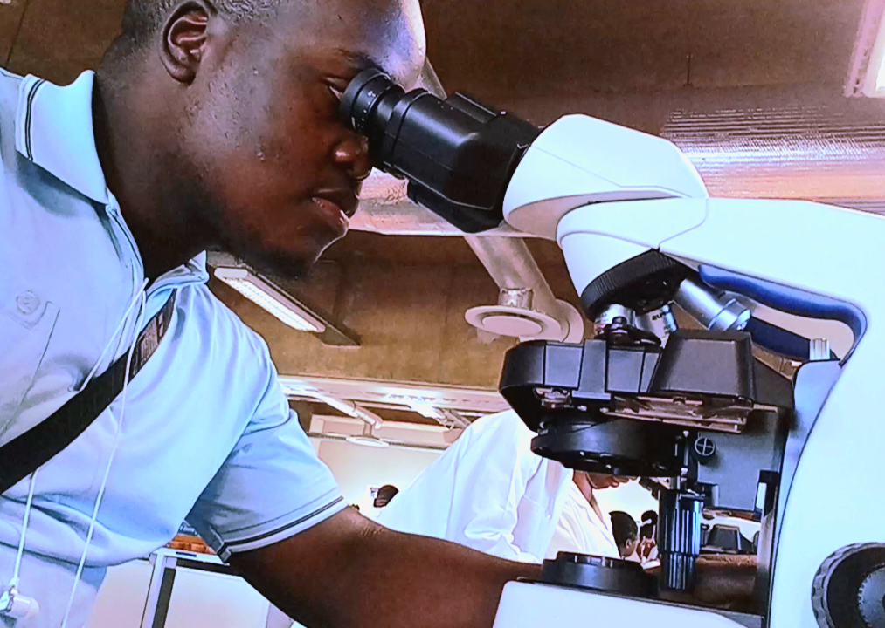

Unlocking Possibilities Through Science
Rooted in the field of Biological Sciences, this initiative brings together a unique blend of academic insight, technological development, and creative problem-solving. The focus lies in bridging science and innovation through practical applications and research-driven solutions.
The work spans multiple disciplines, ranging from algorithm design and AI tools to experimental robotics and financial technology. Projects are guided by curiosity and a desire to create tools that are both effective and impactful.
Areas of exploration include evolutionary biology, environmental sustainability, and the broader patterns that shape life on Earth. There is a strong emphasis on adaptability, critical thinking, and staying aligned with both current research and future-forward inventions. This platform remains committed to applying knowledge meaningfully across different sectors, with a continuous pursuit of growth, relevance, and real world value.
Projects

AI Assistant
This project explores the development of an intelligent assistant capable of natural, responsive interaction. Inspired by the evolving landscape of conversational AI, the aim is to build a dynamic system that goes beyond basic commands, offering meaningful engagement and practical support across everyday tasks.
Leveraging large language models and custom logic layers, the assistant is designed to understand context, execute functions, and adapt to user preferences. It combines conversational fluency with utility, acting as a responsive companion for productivity, information retrieval, and workflow automation.
The long-term vision aligns with creating an integrated AI system reminiscent of fictional frameworks like J.A.R.V.I.S. that manages tasks, facilitates decision making, and augments daily life through seamless interaction. This initiative is an ongoing pursuit of building AI that is both technically robust and human-centric in design.
Automated Intelligence for Smarter Trades
This intelligent trading bot is engineered to analyze market patterns, identify opportunities, and execute trades with precision. It combines real time analytics with automation, offering a seamless integration of finance and artificial intelligence to support smarter, data-driven decisions.
Built for accessibility and control, the system features both voice and text-based interactions. Users can issue commands like “execute trade” or “show portfolio” to manage their activities intuitively and efficiently, all in real time. Designed to adapt, the bot leverages personalized data inputs and user preferences to deliver tailored insights. Unlike traditional bots, it offers contextual decision-making powered by dynamic market analysis and user-specific trends.
Its responsive interface ensures that users remain in control, with real-time feedback and intelligent recommendations enhancing every step of the trading process. This system is continuously evolving to support both beginner and experienced traders. The first rollout supports account sizes starting from $50, making it accessible to entry level users—while remaining fully capable of managing larger accounts with the same level of precision, scalability, and reliability.
Get Early Access to Exness
Register on Exness to get early access to the trading bot that is designed to protect small accounts while securing profits. This bot will aim to manage accounts as low as $10, with minimal risk involved.Spots are limited, Register now to secure your spot and be among the first to access the bot when it's released.
Register Now for Early AccessThe research was conducted in the Intertidal zones along Gqeberha's coastline, investigating species richness and diversity among marine fauna. The study focused on identifying and analyzing various species of see snails ,worms and other invertebrates adapted to the dynamic tidal environments. Special attention was given to their behavioral and physiological adaptations to the changing tides, as well as their ecological roles within the intertidal ecosystem. This work provided valuable insights into biodiversity of these unique habitats and the importance of conserving such critical zones for marine life.
Scientific Research
Explore scientific research conducted along the Port Elizabeth coast below:
View Research PaperEngaging in research projects that explore the innovative intersections between biology and computational sciences. These studies aim to bridge biological understanding with technological advancements, fostering new approaches to scientific discovery.
Explorations
The journey of merging biology and technology has led to fascinating discoveries. From analyzing scientific papers to conducting small-scale experiments, there is a continuous pursuit of pushing boundaries and challenging conventional thinking. This image highlights a dedication to the field of biological sciences. Dressed in a lab coat, the role of a researcher is fully embraced, ready to tackle the challenges of scientific discovery. It represents a commitment to academic excellence, precision, and a deep passion for understanding the natural world. This moment stands as a testament to professional aspirations and the drive to contribute meaningfully to science and society.
Capturing a pivotal moment of focus and discovery, this image showcases an intense exploration of the intricate details of life through a microscope. It reflects the essence of scientific inquiry, where curiosity meets precision, and every observation contributes to unlocking the mysteries of biology. This symbolizes a relentless pursuit of knowledge and the excitement of uncovering the unknown.
Watch the Video of Exploration around Gqeberha's coast.
Exploring the Algae at Port Elizabeth Coast
A recent exploration along the beautiful coast of Port Elizabeth led to a remarkable discovery about the algae observed in the area. These seemingly simple organisms, often overlooked, play a crucial role in the marine ecosystem and may hold valuable insights into the ancient origins of plant life. One of the most striking realizations from these observations was the possibility that many of these algae could be distant ancestors of the larger plant species seen today. The evolution of plants from early marine organisms presents a fascinating journey through time, highlighting how these tiny, seemingly insignificant creatures may have played a role in one of Earth's most significant biological transitions.
Under the lens of a microscope, these algae reveal a hidden complexity. What appears to be a simple organism to the naked eye transforms into an intricate world of microscopic structures, each performing essential survival functions. Some algae displayed almost alien-like characteristics under magnification complex in their symmetry and patterns, showcasing the immense diversity of life, even in its smallest forms. This exploration prompted deeper questions about the connection between marine life and land-based plants, shedding light on how adaptation from one environment to another may have shaped the development of all plant life on Earth. These algae are not just part of the ocean's ecosystem; they serve as a window into the evolutionary history of the plant species that now dominate terrestrial landscapes.
Investigating the microscopic world of algae not only enhances an appreciation for the complexity of nature but also sparks curiosity about other ancient biological connections that remain undiscovered. The algae studied at Port Elizabeth may provide valuable answers to long-standing questions about the evolution of plant life, offering new perspectives on Earth's natural history.
Watch the Video of Separating solids in a Heterogenous mixture
Heterogenous Mixtures & Recrystallization
In this video, we explore essential techniques for separating a heterogeneous mixture, including manual sorting, filtration, evaporation, recrystallization, and determining the melting point for purity. Some steps have been omitted to keep the video shorter, You can reach to us for a more detailed look at the entire process. It is Mind Blowing.